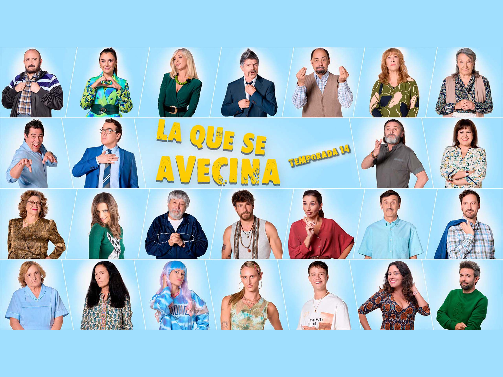
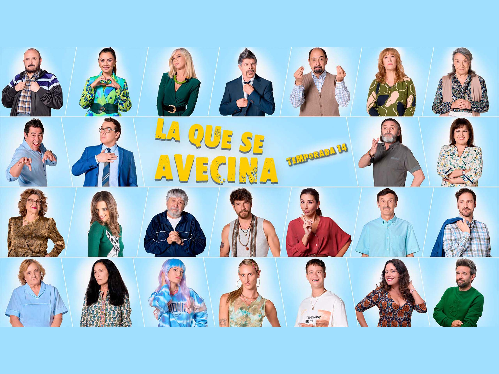
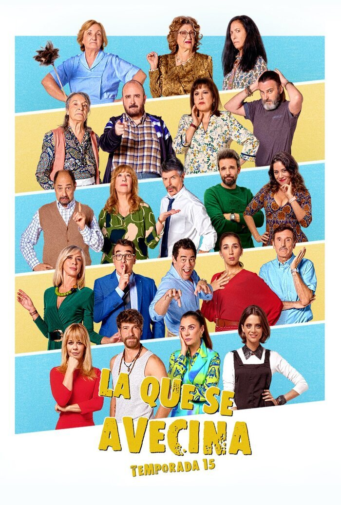

Breve descripción
La serie se caracteriza por su humor absurdo, diálogos rápidos y personajes extrafalarios, cada uno con rasgos distintivos que generan conflictos hilarantes.
La serie se caracteriza por su humor absurdo, diálogos rápidos y personajes extrafalarios, cada uno con rasgos distintivos que generan conflictos hilarantes.
Ya está aqui la decimoquinta temporada de la que se avecina. Nuevo episodio cada lunes en Prime video.
